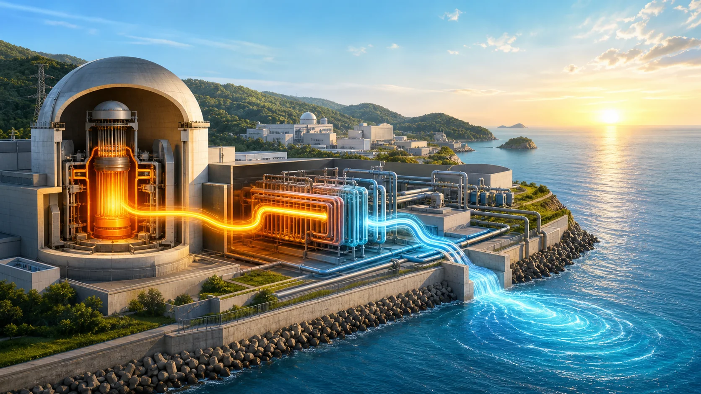
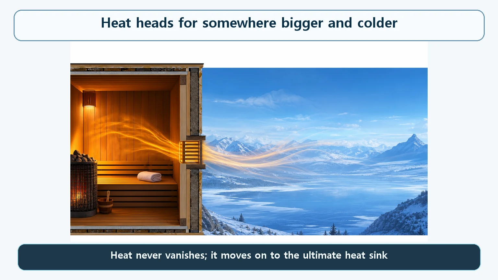
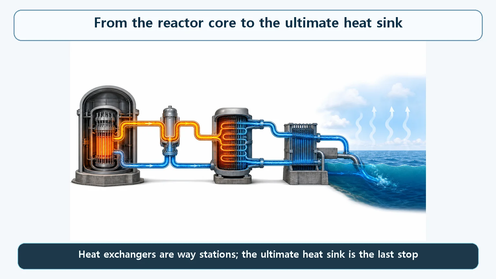

Heat Transfer & Thermal Hydraulics · 149
Why a Sauna Never Cools Itself Down — The Ultimate Heat Sink, Where Reactor Heat Must End Up
Filling the core with water is only half the job. The heat that water absorbs must keep moving, stage by stage, until it reaches a reservoir too large to warm up.

Heat never disappears; it only moves somewhere colder. Even in a loss-of-coolant accident, the heat the core keeps producing must travel an unbroken path, through heat exchangers and cooling systems, to the ultimate heat sink: the sea, a river, a lake or the atmosphere.
The sauna that won't cool down
Picture yourself in a sauna, sweating it out. Even with the door slightly ajar, the air inside barely cools. Why? However much hot air swirls around inside, if that heat only circulates within the small room, the room can never cool down. To truly cool off, the heat has to escape through the vent to a space far larger and cooler than the sauna: the changing room, the whole building, ultimately the open air. Letting it drift into the next room isn't enough; once that room warms up, the heat is stuck again.

Reactor heat faces the same question
What if reactor coolant drained away fast because of an accident such as a pipe break? That situation is called a loss-of-coolant accident (LOCA). Equipment then kicks in to force water back into the core, but here we ask a more fundamental question: where does the heat that water absorbs go next?
Even after a reactor shuts down, decay heat keeps coming from the core, and in a LOCA, where the coolant inventory itself is in jeopardy, it still doesn't stop. So filling the core with water is only half the story. If the heat the water absorbs can't keep flowing out somewhere, you have the sauna with its door ajar: the water keeps heating up, and the core never really cools.
Heat never disappears, it only moves
The law of conservation of energy, the first law of thermodynamics, tells us heat does not simply vanish. When we say we "get rid of heat," we strictly mean "move it somewhere else at a lower temperature."
So how far must core heat travel before it has truly been dealt with? To the ultimate heat sink: the natural heat reservoir, practically limitless in size, where core heat finally arrives after a chain of cooling paths. Seawater, a river, a lake, or the atmosphere via a cooling tower are typical examples. Such a reservoir is so large that taking in the reactor's heat doesn't raise its own temperature in any meaningful way. In the sauna analogy, it is the whole atmosphere outside.

Heat exchangers are way stations, not the last stop
The coolant (or, in an accident, the injected water) absorbs the core's heat and passes it to the next stage's cooling water through a heat exchanger, which keeps a physical boundary between the system containing radioactive material and the outside environment while transferring only heat. The heat then passes through an intermediate cooling water system and on to the ultimate heat sink outside the plant site.
| Stage | Role |
|---|---|
| Core | Where heat is continuously produced (fission, or decay heat after shutdown) |
| Coolant or injected water | Absorbs and carries the core's heat |
| Heat exchanger | Passes only heat to the next stage, keeping radioactive systems physically separated |
| Intermediate cooling water | Carries the heat on toward the site boundary |
| Ultimate heat sink | Sea, river, lake or atmosphere: large enough that its temperature barely changes |
Heat exchangers and intermediate systems look like "places that take in heat," so it's tempting to mistake them for the ultimate heat sink. But they only pass heat along. If they can't keep passing it on, they heat up and eventually can't accept any more. Only a reservoir so huge that the heat needn't move any further is the ultimate heat sink. If any stage gets blocked, heat piles up behind it, and however hard you fill the core with water, you're back to the sauna with one door ajar.
Why one path isn't enough
Plants are designed so that the path to the ultimate heat sink doesn't depend on a single point, such as one water intake or one pump, because damage there could cut the whole path at once. The principle of providing several layers that can stand in for each other, the same thinking behind physically separating a plant's key buildings, applies here too.
In the 2011 accident at the Fukushima Daiichi nuclear power plant, the reactors shut down automatically as intended right after the earthquake. But the tsunami that followed flooded emergency power and seawater intake equipment extensively, and the path for carrying the heat remaining in the cores to the ultimate heat sink, the sea, was cut for a long time, as discussed in accident analysis reports by the International Atomic Energy Agency (IAEA) and others. Having cooling water somewhere and having a working path, including power, pumps and piping, that actually moves its heat to the ultimate heat sink are entirely different matters.
Clearing up common mix-ups
"Cooling the reactor" does not make heat disappear. Heat only changes location: core, coolant, heat exchanger, intermediate cooling water, ultimate heat sink. Only when this relay runs unbroken has the core cooled.
"The core is full of water, so we're safe" is half the reassurance. Filling with water secures the coolant inventory; it does not by itself remove heat. The heat must actually reach the ultimate heat sink.
The one-line takeaways
- Heat never disappears; it only moves somewhere colder, just as sauna heat must escape to a much bigger space outside.
- Even in a LOCA, the heat the core keeps producing (including decay heat) must ultimately go somewhere.
- That final, practically limitless reservoir is the ultimate heat sink: seawater, a river, a lake, or the atmosphere via a cooling tower.
- Heat exchangers and intermediate cooling systems are way stations; the whole path from core to sink must stay connected.
- Filling the core with water and getting its heat to the sink are different problems; Fukushima showed the path itself can be cut.